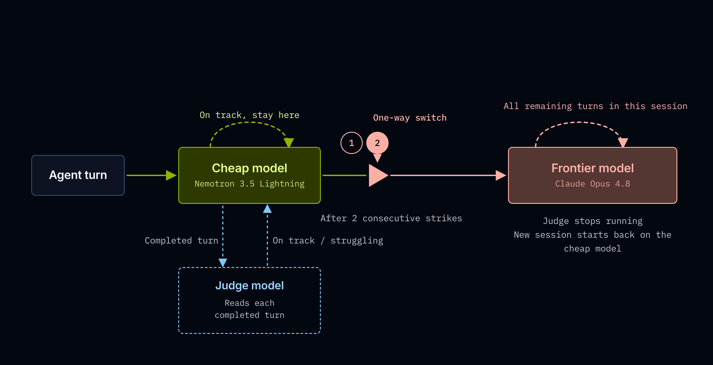
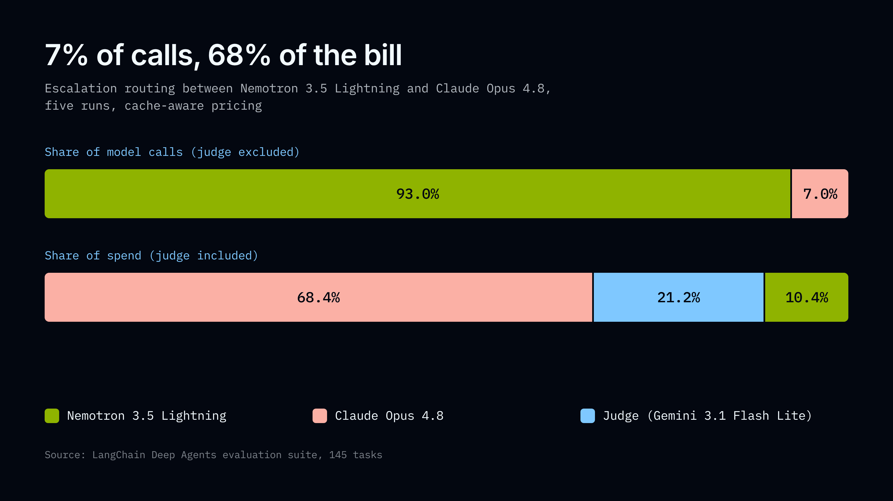

agent会发很多LLM调用，而多数团队把每一次都发给同一个模型。NVIDIA NeMo Switchyard是一个开源的模型路由库，能在agent工作流各步骤间自动化模型选择：不需要前沿模型处理的活，就不发到前沿模型上去。
LangChain用Deep Agents评估套件跑了一遍Switchyard，测出路由器发往前沿模型的调用只有7%，剩下93% 由一个30B参数模型处理。在NeMo 3.5 Lightning与Claude Opus 4.8之间路由，总成本比纯用Opus降了74%，同时保留约93% 的准确率。下面给出实测数据，以及一个告诉你何时该在自己工作负载上用同一策略的公式。
过去把每一次调用发给同一个模型是合理的默认项：那时的模型更便宜、能力更接近。但这点已经变了：前沿模型更贵也更强大，而开放权重模型已经快到、便宜到能承接agent真实工作的一部分，尽管不是全部。与此同时，一句『读一下这个文件』和一句『查清楚这个测试为什么失败』仍以相同的每token价格发给同一个模型，尽管前者微不足道、后者并非如此。
多少回合真正需要那个贵模型，决定了路由是否划算。LangChain已有针对Deep Agents的基准套件，这次只是把基准的指向从『一个模型』换成『一个路由器』。
Switchyard（NVIDIA-NeMo开源）是NVIDIA的模型路由库，它基于你给每个步骤配置的策略，把每条agent查询自动路由到封闭与开放模型的任意组合。你可以把它当作agent指向的一个proxy来跑，也可以作为agent进程里的middleware。
它提供两种路由思路（第三种在研究中），在延迟与准确率之间做不同取舍。LLM classifier：一个小的judge模型参与路由决策，有三种模式：capability每次按能力选目标、escalation每个任务从便宜模型起步、连续坏回合后把会话升级到大模型、custom由你自定义；它有更高准确率潜力，代价是多一次对小模型调用。Stage router（启发式）：按工作流阶段路由，读错误模式、推理模式与token数，不加额外模型调用、延迟几乎为零，但只在你的流量产生它要找的信号时才触发（本篇未基准测试）。Prefill-activation MLP：读prefill时的模型内部激活来路由，处于研究阶段而非生产就绪，是NVIDIA正在探索的方向。
LangChain基准测的是LLM classifier的escalation模式：每个任务先从更便宜的模型起步，一个小judge模型读每个完整回合并投票判断agent是否在正轨上，连续两次负面判定就把该任务此后改路由到贵模型。这个『单行道』减少路由成本，因为任务一旦升级，judge就不必再在每个回合上运行。

Deep Agents评估套件有145个多步agent任务，平均每个任务6.3次模型调用，工具操作映射到真实生产负载：政策约束下的客服对话、on-call事故排查、跨消息/问题跟踪/邮件的多步工作流自动化；评估覆盖工具使用、多步检索、文件系统操作与长上下文总结。
一个重要范围说明：这些评估在受控场景里跑，好处是能直接归因失败原因，坏处是套件已经饱和：三类工作量准确率都很高，30B参数模型与前沿模型之间只有8个点差异，这给路由发挥价值的空间比更难的负载更小。把所有成本按缓存输入价计（发票显示的就是这个）。
三臂对比：纯Opus 4.8是86.0% 准确率、每次运行 $11.45；路由后（Opus + NeMo 3.5 Lightning）80.0%、$3.00；纯NeMo Lightlion 77.7%、$0.72。调用去向与钱流向的错位是核心发现：NeMo 3.5 Lightning处理了93% 的模型调用却只占10.4% 的花费，Opus处理7% 的调用却花了68.4%。前沿模型被用得远少于单模型假设，而最后6个点的准确率，每个完成任务要多花3.5倍。
judge还占了剩余21.2% 的花费：它在任务升级前每个回合都跑，且不像前沿模型能从prompt缓存受益，所以在路由臂里成了仅次于Opus的第二大开销项。想砍路由成本，judge模型比升级率更值得优化。

准确率代价是真实的：路由便宜74%、准确率低6点；单次运行波动约2.7点，所以6点差距明显在噪声之外。价值来自把流量从前沿模型移开：把简单活发给廉价模型才是省钱所在；而当一个任务因廉价模型吃力而升级到Opus时，只比纯跑廉价模型好2.3点，小于运行自身波动，所以不能说路由在这里胜过了廉价模型。成本跨运行稳定：Opus三次运行只波动1.5%，74% 这个数字立在稳定基线上。
五次运行里，前沿流量从4.1% 到9.1%，均值6.9%，最重的一次升级次数是最轻的两倍多。一次Opus调用约 $0.0324，NeMo 3.5 Lightning约 $0.00037（约87倍差价），于是这个波动把成本范围推到 $2.16到 $3.61：五轮之间啥都没变，只是路由器决定升级哪些回合，账单就动了67%。
这就是你接手一个路由器时的取舍：它降低平均花费、同时拉宽围绕它的波动范围。要按这个范围的上限做预算。想收窄它，strike次数是最有杠杆的设置（配置里的confirmations，决定judge在移任务到前沿模型前要看到多少次坏回合）；降低它就会更频繁升级，而那些是贵调用。judge本身是另一个杠杆：它占路由花费21.2%，一个更便宜的judge，或能跳过明显正常的回合，直接就是从账单里减钱。
NeMo 3.5 Lightning单独77.7%、$0.72一次；纯Opus 86.0%、$11.45；路由80.0%、$3.00。为什么不用模型路由器？路由只比廉价模型高2.3点、贵4.2倍：这个差距小于运行自身2.7点的波动，所以不能说路由在此胜过了廉价模型。必须坦白：廉价模型表现很好，这套件上只有8点把NeMo 3.5 Lightning与前沿模型分开。
但对比里带着事后视角：我们知道这145个任务的结果。生产里你不知道刚来的请求是易是难，而把廉价模型用在一切上，意味着在难任务上也只能接受它的答案。路由是『不必猜』的代价，也同时压低了你的成本上限：我们最差的一次路由运行 $3.61，约为纯Opus的三分之一。
所以如果你的首要目标是成本最低、流量又像这个负载，NeMo 3.5 Lightning单独是更好的选择。路由是给那些需要在难请求上具备前沿能力、又无法预先判断哪些请求难的团队的。
相对于纯前沿模型，路由器只在『你发给更小模型的回合占比超过这个门槛』时降低总成本：最小卸载比例 = judge成本 / (贵模型成本 − 廉价模型成本)。judge是每次运行的固定税：它在任务升级前每个回合都跑，无论最后有没有升级。所以问题从来不是『我的廉价模型够不够好』，而是『我的两个模型间的价格差有没有宽到能付得起judge』。
以这组配对为例：judge每次运行 $0.64，价格差 $10.73，所以只需卸载5.9% 的回合，而实际卸载了93%，比门槛高16倍。差距一边倒时公式有点像走形式；它在价差较窄、答案不那么明显时更有用。
公式也能把路由排除在外：如果两个模型价格接近，每次卸载省的钱很少，公式要求你卸载超过100% 的回合：这是不可能的，任何judge配置都救不了。例外是本地托管的廉价模型：在DGX Spark之类的设备上自跑，推理成本近乎为零，价差被重新拉宽到足以让路由划算。公式不能告诉你这个路由器在你的流量上会不会做对选择，只能告诉你『对的选择』值不值得付费：用它来从成本上排除路由，用自己的负载来把它确认回来。
两种情形别用：对延迟敏感：judge是每回合第二个模型调用，约700ms，而stage router几乎为零；工作负载太短：escalation需要多回合轨迹才有东西可读。
LangChain还测了middleware版本：路由在进程内进行，无需单独服务，任何LangChain聊天模型都可作为路由目标，工具绑定、回调、追踪与结构化输出都继续工作，每个响应在response_metadata["switchyard"] 里携带路由轨迹。数字来自服务器端escalation模式；middleware是实验性的、尚未发布为包。他们下一步想测：更便宜或本地托管的judge（占21.2%）、更难的工作负载（路由在模型差距更大处更值得证明）、以及confirmations=1。
参考：https://www.langchain.com/blog/switchyard-agent-routing-benchmark